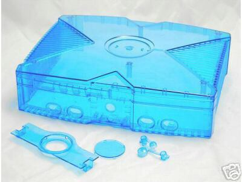
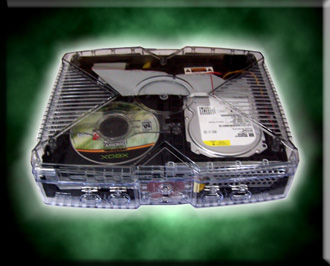
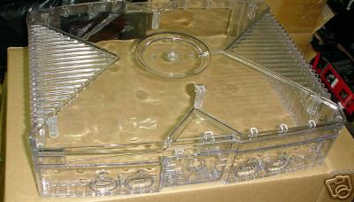

CASE MODS
Colored Shells:

Usually, the replacement is just the TOP shell, not the bottom part
that the motherbaord is attached to. There are many colors,
including freen (for you Halo fans).
Other modifiactions include LEDs, Hard Disk activity LED, and other
lighting, added USB ports, and "skins" to wrap it in. You
can find them all on Ebay.
There is only ONE true Halo Green chassis, and it is the entire case,
not just the top shell. These were from Microsoft, and will have
the HALO logo on the right side of the unit. People on Ebay try
to sell by stating HALO GREEN chassis, but, I have the original Halo
Edition Xbox, and they are not the same. The official HALO
edition is more a transluscent green, not 100% transparent like some of
those ones on Ebay.